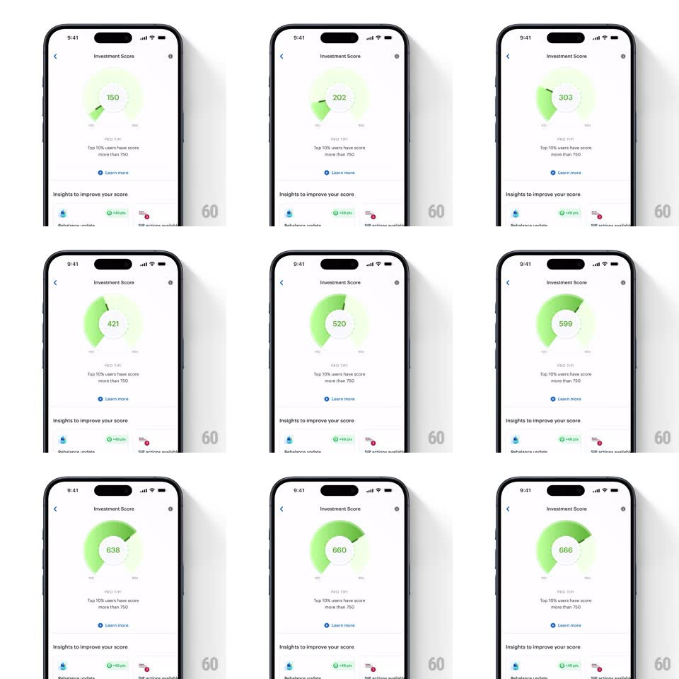

Media
Frame-by-frame

Rebuild this interaction 1:1: Smallcase's investment score meter - the semicircular gauge arc draws clockwise while the score number in its center counts up in sync, settling at 666 with the needle at rest.

Rebuild this interaction 1:1: Smallcase's investment score meter - the semicircular gauge arc draws clockwise while the score number in its center counts up in sync, settling at 666 with the needle at rest. ## Integration Integration: stack-agnostic spec - springs given as stiffness/damping, timed motions as duration + curve; map every value to your framework and animation library of choice. ## Scene A white "Investment Score" page: the gauge hero (a semicircular track with a green gradient fill and a center number), the caption "Top 10% users have score more than 750" with a "Learn more" link, and below it "Insights to improve your score" with insight rows (Rebalance update, +48 pts, actions available). ## Motion spec Pattern: gauge draw + synced counter. - On page entry the gauge animates from zero: the green arc sweeps clockwise around the semicircle (stroke draw, 1.6s, ease-out) with a soft glow trailing the arc head. - The center number counts up in lockstep (0 -> 666, same 1.6s ease-out, integer steps) - the counter and arc finish together. - A needle/tick at the arc head rides the sweep and settles with a tiny overshoot (rotate +2deg then back, 200ms). - The arc's gradient deepens as it fills (light lime -> solid green) - the color intensity tracks the score. - After settle, a faint pulse glows once around the arc (400ms) - done, no loop. ## Calibration - Count and arc are the same animation - never let the number finish before the arc or vice versa. - Total draw is about 1.6s - long enough to read the climb, short enough to not bore. ## Reduced motion Gauge renders filled at the final score with a fade-in. ## Don't miss - The track underneath is a pale grey-green - the filled arc stands apart from it. - The caption's "750" benchmark gives the 666 context - keep both visible in the same viewport.